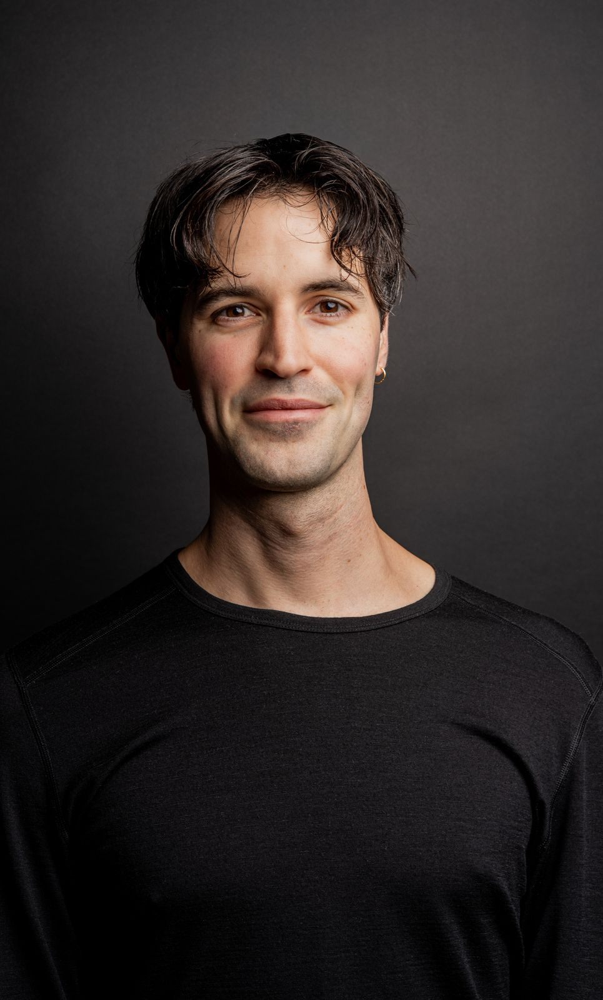

makeworkbetter
makeworkbetter
Ich arbeite mit mittelständischen Unternehmen an ihrer IT, ihren Prozessen und Systemen, damit die tägliche Arbeit leichter wird.
Ich arbeite mit mittelständischen Unternehmen an ihrer IT, ihren Prozessen und Systemen, damit die tägliche Arbeit leichter wird.
Über die Jahre ist in jedem Unternehmen viel entstanden. Vieles davon funktioniert gut, manches passt nicht mehr zusammen. Ich schaue mir beides an und überlege mit dir, was der nächste sinnvolle Schritt ist. Ob Microsoft, Google oder Open Source: Ich arbeite mit dem, was du hast.
Über die Jahre ist in jedem Unternehmen viel entstanden. Vieles davon funktioniert gut, manches passt nicht mehr zusammen. Ich schaue mir beides an und überlege mit dir, was der nächste sinnvolle Schritt ist. Ob Microsoft, Google oder Open Source: Ich arbeite mit dem, was du hast.
Drei Schritte, die aufeinander aufbauen.
Analysieren. Ich schaue mir an, wie bei dir gearbeitet wird: welche Prozesse es gibt, welche Systeme sie unterstützen, wo Daten liegen und wie die Menschen damit zurechtkommen. Am Ende weißt du, wo du stehst.
Entscheiden. Wir legen gemeinsam fest, was zuerst kommt und was warten kann. Dazu gehört auch die Frage, wo KI dir tatsächlich Arbeit abnimmt und wo nicht.
Aufbauen. Ich begleite die Umsetzung, bis die neuen Abläufe im Alltag funktionieren. Dein Team kann die Systeme danach selbst betreiben und weiterentwickeln. Du bist nicht von mir abhängig.
Kein einzelnes System löst alles.
Auch KI nicht.
Wie andere die Zusammenarbeit erlebt haben.
„Seine herausragende Fähigkeit, komplexe digitale Konzepte klar und verständlich zu kommunizieren, war von großer Bedeutung für das Verständnis und die Akzeptanz neuer Technologien und Prozesse im gesamten Unternehmen.“
„Er genoss bei unseren Kunden ein hohes Ansehen und baute langfristige, vertrauensvolle Geschäftsbeziehungen auf.“
„Seine Arbeitsweise war fortwährend von sehr hoher Systematik, Zuverlässigkeit und Effizienz geprägt.“
Wo Arbeit schon besser wurde.
In der Pandemie musste ein Hersteller von einem Tag auf den anderen von zu Hause aus arbeiten können. Wir haben die Infrastruktur in die Cloud gebracht. Das Geschäft lief weiter, und viele arbeiten bis heute hybrid.
Neue Systeme wurden eingeführt, aber kaum genutzt. Wir haben eine Schulung in drei Stufen aufgebaut, vom Einstieg bis zur Vertiefung. Neue Mitarbeitende waren danach deutlich schneller eingearbeitet.
ERP, Onlineshop und Produktdatenbank liefen nebeneinander her. Wir haben sie verbunden und das Hosting erneuert, damit das Online-Geschäft wachsen konnte.
Für mittelständische Kunden habe ich zuerst den Stand ihrer IT erhoben und daraus einen Plan gemacht. Danach haben wir sie Schritt für Schritt in die Microsoft Cloud umgezogen.